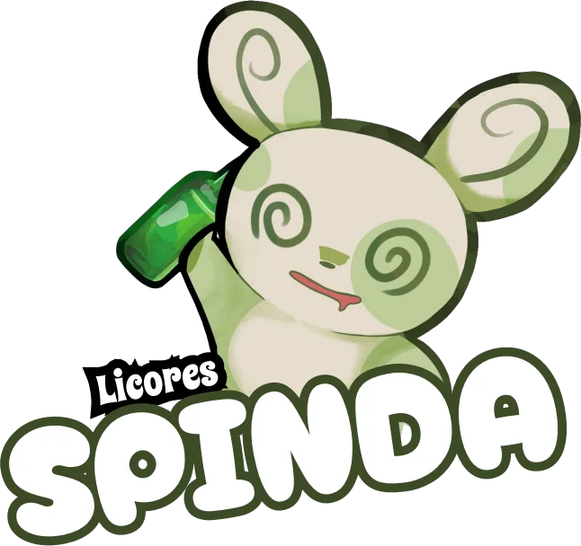

Sabor
Limón
Ácido, fresco y directo. Pedilo bien frío.
22% vol.
360 mL
Catálogo
Una botella, un color y un Spinda para cada uno.
Spinda sigue girando: pronto se suman nuevos sabores a la línea.
Cómo tomarlo
Tocá un sabor para ver con qué combina.
Con Sprite
Queda bien: fresco y con burbujas.
Con agua tónica
También queda bien y se arma en un minuto.
En postres
Es una especie de limoncello, así que también se puede usar en postres.
En shots
Directo, en vasito.
Con agua tónica
Se logra una bebida sabor mandarina bastante ligera y fresca.
Con Sprite
El sabor se acerca más al de naranja.
Con agua tónica y hielo
Así queda bien.
En shots bien fríos
Servilo helado.
Bien frío
Conviene mantenerlo frío casi siempre.
Solo
Se disfruta mejor sin mezclas.
En shots de sobremesa
Va bien para cerrar la comida.
Primera Edición
AVISO GUBERNAMENTAL: de acuerdo a la municipalidad de Berisso y la región de Kanto no se recomienda beber en estado de ayunas ni en situación de embarazo. Advertencia: su consumo puede provocar malas decisiones, se recomienda no conducir ni tener el teléfono cerca durante su consumo. Disfrute C:
Producto de Argentina